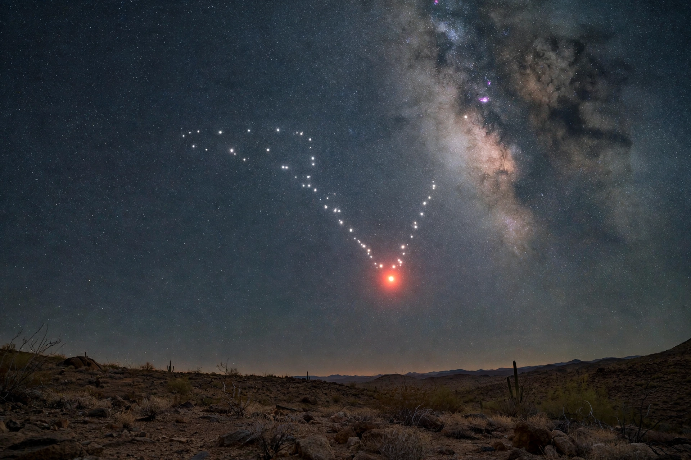

Aldebaran
Aldebaran (Arabic: الدبران, al-Dabarān, "the follower") is a red giant star in the constellation of Taurus and the brightest star in that constellation. With an average apparent magnitude of 0.87 it is typically the fourteenth-brightest star in the night sky. It appears to lie among the Hyades — the V-shaped cluster that forms the Bull's face — marking the bull's fiery eye, although it is in fact much closer to Earth than the cluster.

| Aldebaran (α Tauri) | |
|---|---|
| Constellation | Taurus |
| Apparent magnitude | 0.75–0.95 (variable) |
| Spectral type | K5 III |
| Distance | 65 light-years |
| Radius | c. 44 R☉ |
| Luminosity | c. 425 L☉ |
Characteristics
Aldebaran is an evolved K-type orange giant that has exhausted the hydrogen in its core and begun fusing helium; its photosphere has cooled to about 3,900 K and expanded to roughly 44 times the Sun's radius — if placed at the Sun's position it would reach about halfway to Mercury's orbit. It is a slow, irregular variable whose brightness fluctuates slightly. The star has a disputed giant exoplanet candidate (Aldebaran b) and several faint red-dwarf companions at wide separations.
Observations
The name refers to the star "following" the Pleiades across the sky. Aldebaran is one of the four "royal stars" of Persian astronomy. In 1972 the Pioneer 10 space probe passed within its general direction; it will make its closest approach to the star in about two million years. Because it lies near the ecliptic, Aldebaran is regularly occulted by the Moon.
See also
Categories: Taurus (constellation) · Red giants · Bayer objects